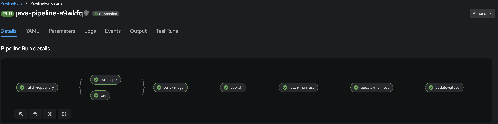

Pipeline Setup
This tutorial will guide you through the process of setting up and executing a pipeline using the provided Helm chart. We will cover creating a pipeline and PVC, launching a PipelineRun, and setting up event listeners and triggers.
The code examples and instructions in this tutorial are located under
openshift-quickstartproject in thetutorials/gitops/pipelinedirectory. Ensure you are in this directory before executing the commands.
-
Navigate to the Tutorial Directory
-
Or open a New Terminal
Prerequisites
Before installing the pipeline, you need to set up registry credentials to allow pushing images to your container registry.
-
Link the secret to the pipeline service account:
This configuration allows the pipeline to authenticate with your container registry when pushing built images.
Install the Pipeline Using Helm
The provided Helm chart is designed to be generic and reusable, allowing multiple users and pipeline types to utilize the same chart with minimal configuration. This is achieved through parameterization and naming conventions.
Conventions Explained:
- Release Name:
The Helm release name should reflect the pipeline type you are deploying. Common examples include: javagolangnodejs
This naming convention helps distinguish between different pipeline instances clearly and consistently.
- Namespace:
The namespace parameter allows multiple users to deploy their pipelines independently without conflicts. Typically, each user has a dedicated namespace, such as: devspaces-user1
Using separate namespaces ensures isolation and prevents resource conflicts between different users or teams.
- Generic Chart Structure:
The Helm chart uses templating to dynamically generate Kubernetes resources based on the provided parameters. This approach allows the same chart to be reused across different pipeline types and namespaces without modification.
Example Installation Command:
Replace <pipeline-type> with your chosen pipeline type (java, golang, or nodejs) and <namespace> with your user-specific namespace (user1 or devspaces-user1):
Detailed Example:
For instance, if you are deploying a Java pipeline for user user1, your command would look like this:
Understanding Pipeline Resources
When you install the pipeline Helm chart, it creates several Kubernetes resources that work together to form a complete CI/CD pipeline. Let's understand each component and its role.

Core Pipeline Definition
The main pipeline is created with a series of connected tasks that handle your application's build and deployment process:
# Example pipeline structure
Pipeline
├── fetch-repository # Clones source code
├── tag # Generates build tag
├── build-app # Language-specific build
├── build-image # Creates container image
├── publish # Publishes to registry
├── fetch-manifest # Gets GitOps manifests
├── update-manifest # Updates image details
└── update-gitops # Updates GitOps config
Language-Specific Builds
The pipeline automatically includes the appropriate build task based on your chosen pipeline type: - For Java: Maven/Gradle build process - For Golang: Go build process - For JavaScript: npm/yarn build process
Persistent Storage
The pipeline creates two Persistent Volume Claims (PVCs) to maintain data between pipeline runs:
-
Workspace PVC (
<pipeline-name>-ws):- Size: 10Gi
- Purpose: Stores source code and build artifacts
- Access Mode: ReadWriteOnce
-
Resource Workspace PVC (
<pipeline-name>-resource-ws):- Size: 10Gi
- Purpose: Stores GitOps manifests and configurations
- Access Mode: ReadWriteOnce
Trigger System
The pipeline includes an event-driven system to automatically start builds:
-
Event Listener:
- Acts as a webhook endpoint
- Receives and validates incoming events
- Routes events to appropriate triggers
-
Trigger Template:
- Defines how to create PipelineRuns
- Maps incoming event data to pipeline parameters
- Ensures consistent pipeline execution
Usage Example
To install the pipeline with these resources:
# For a Java application
helm install java . -f java/values.yaml --namespace devspaces-user1
# For a Golang application
helm install golang . golang/values.yaml --namespace devspaces-user1
# For a JavaScript application
helm install js-frontend . js/values.yaml --namespace devspaces-user1
helm install js-backend . js/values-backend.yaml --namespace devspaces-user1
Resource Naming
All resources follow a consistent naming pattern based on your installation parameters: - Resources are prefixed with the pipeline type (java/golang/js) - Resources are created in the specified namespace - Each resource includes appropriate labels for management and organization
Pipeline Flow
- When triggered, the pipeline first clones your source code
- Generates a unique tag for the build
- Builds your application using language-specific tools
- Creates and publishes a container image
- Updates GitOps manifests with new image details
- Commits changes to your GitOps repository
Launch the PipelineRun
To execute the pipeline, we need to create a PipelineRun using the OpenShift UI.
-
Create the PipelineRun:
-
Navigate to the OpenShift Console and log in with your credentials.
- Go to the "Pipelines" section in your project.
- Click on the target pipeline from the list.
-
Click Actions and "Start" button.
-
Select Workspaces:
Before starting the PipelineRun, ensure that you have selected the appropriate workspaces and PVCs. This is crucial for the pipeline to access necessary resources and credentials.
- Select Workspaces:
- Ensure the following workspaces are selected:
<pipeline-type>-ws<pipeline-type>-resource-ws<pipeline-type>-dockerconfig<pipeline-type>-git-credentials

-
Select PVCs:
- Ensure the following PVCs are selected:
<pipeline-type>-ws(replace with actual PVC name)<pipeline-type>-resource-ws(replace with actual PVC name)
-
Link Docker and GitHub Credentials:
- Ensure that the Docker and GitHub credentials are linked to the pipeline service account:
registry-credentialsfor Dockergit-credentialsfor GitHub
After selecting the workspaces, PVCs, and linking the credentials, proceed to the next step.
- Click "Start":
Once all selections are made, click the "Start" button to initiate the PipelineRun.
- Verify the Manifest Update:
After the pipeline completes successfully, verify that the manifest repository has been updated with the new image details:
- Check the latest commit in the repository
- Verify that the image tag has been updated in the relevant deployment manifests
- The commit message should indicate the pipeline run that triggered the update
This confirms that the pipeline has successfully built and published the new image, and updated the GitOps manifests accordingly.